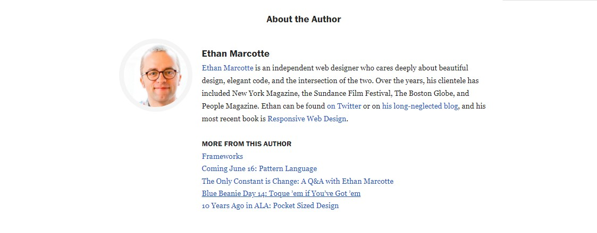

A LIST APART
Design
by Ethan MarcotteMay 25, 2010
Published in CSS, Interaction Design, Layout & Grids,
Mobile/Multidevice, Responsive Design "The control which designers know in the print medium, and often desire in the web medium, is simply a function of the limitation of the printed page. We should embrace the fact that the web doesn’t have the same constraints, and design for this flexibility. But first, we must 'accept the ebb and flow of things.'
John Allsopp, “A Dao of Web Design"
The English architect Christopher Wren once quipped that his chosen field “aims for Eternity,” and there’s something appealing about that formula: Unlike the web, which often feels like aiming for next week, architecture is a discipline very much defined by its permanence.

A building’s foundation defines its footprint, which defines its frame, which shapes the facade. Each phase of the architectural process is more immutable, more unchanging than the last. Creative decisions quite literally shape a physical space, defining the way in which people move through its confines for decades or even centuries.
Working on the web, however, is a wholly different matter. Our work is defined by its transience, often refined or replaced within a year or two. Inconsistent window widths, screen resolutions, user preferences, and our users’ installed fonts are but a few of the intangibles we negotiate when we publish our work, and over the years, we’ve become incredibly adept at doing so.
But the landscape is shifting, perhaps more quickly than we might like. Mobile browsing is expected to outpace desktop-based access within three to five years. Two of the three dominant video game consoles have web browsers (and one of them is quite excellent). We’re designing for mice and keyboards, for T9 keypads, for handheld game controllers, for touch interfaces. In short, we’re faced with a greater number of devices, input modes, and browsers than ever before.
In recent years, I’ve been meeting with more companies that request “an iPhone website” as part of their project. It’s an interesting phrase: At face value, of course, it speaks to mobile WebKit’s quality as a browser, as well as a powerful business case for thinking beyond the desktop. But as designers, I think we often take comfort in such explicit requirements, as they allow us to compartmentalize the problems before us. We can quarantine the mobile experience on separate subdomains, spaces distinct and separate from “the non-iPhone website.” But what’s next? An iPad website? An N90 website? Can we really continue to commit to supporting each new user agent with its own bespoke experience? At some point, this starts to feel like a zero sum game. But how can we—and our designs—adapt?
A flexible foundation
Let’s consider an example design. I’ve built a simple page for a hypothetical magazine; it’s a straightforward two-column layout built on a fluid grid, with not a few flexible images peppered throughout. As a long-time proponent of non-fixed layouts, I’ve long felt they were more “future proof” simply because they were layout agnostic. And to a certain extent, that’s true: flexible designs make no assumptions about a browser window’s width, and adapt beautifully to devices that have portrait and landscape modes.

Working on the web, however, is a wholly different matter. Our work is defined by its transience, often refined or replaced within a year or two. Inconsistent window widths, screen resolutions, user preferences, and our users’ installed fonts are but a few of the intangibles we negotiate when we publish our work, and over the years, we’ve become incredibly adept at doing so.
But the landscape is shifting, perhaps more quickly than we might like. Mobile browsing is expected to outpace desktop-based access within three to five years. Two of the three dominant video game consoles have web browsers (and one of them is quite excellent). We’re designing for mice and keyboards, for T9 keypads, for handheld game controllers, for touch interfaces. In short, we’re faced with a greater number of devices, input modes, and browsers than ever before.
In recent years, I’ve been meeting with more companies that request “an iPhone website” as part of their project. It’s an interesting phrase: At face value, of course, it speaks to mobile WebKit’s quality as a browser, as well as a powerful business case for thinking beyond the desktop. But as designers, I think we often take comfort in such explicit requirements, as they allow us to compartmentalize the problems before us. We can quarantine the mobile experience on separate subdomains, spaces distinct and separate from “the non-iPhone website.” But what’s next? An iPad website? An N90 website? Can we really continue to commit to supporting each new user agent with its own bespoke experience? At some point, this starts to feel like a zero sum game. But how can we—and our designs—adapt?
A flexible foundation
Let’s consider an example design. I’ve built a simple page for a hypothetical magazine; it’s a straightforward two-column layout built on a fluid grid, with not a few flexible images peppered throughout. As a long-time proponent of non-fixed layouts, I’ve long felt they were more “future proof” simply because they were layout agnostic. And to a certain extent, that’s true: flexible designs make no assumptions about a browser window’s width, and adapt beautifully to devices that have portrait and landscape modes.
Huge images are huge. Our layout, flexible though it is, doesn’t respond well to changes in resolution or viewport size.

But no design, fixed or fluid, scales seamlessly beyond the context for which it was originally intended. The example design scales perfectly well as the browser window resizes, but stress points quickly appear at lower resolutions. When viewed at viewport smaller than 800×600, the illustration behind the logo quickly becomes cropped, navigation text can wrap in an unseemly manner, and the images along the bottom become too compact to appear legible. And it’s not just the lower end of the resolution spectrum that’s affected: when viewing the design on a widescreen display, the images quickly grow to unwieldy sizes, crowding out the surrounding context.
In short, our flexible design works well enough in the desktop-centric context for which it was designed, but isn’t optimized to extend far beyond that.
Becoming responsive Recently, an emergent discipline called “responsive architecture” has begun asking how physical spaces can respond to the presence of people passing through them. Through a combination of embedded robotics and tensile materials, architects are experimenting with art installations and wall structures that bend, flex, and expand as crowds approach them. Motion sensors can be paired with climate control systems to adjust a room’s temperature and ambient lighting as it fills with people. Companies have already produced “smart glass technology” that can automatically become opaque when a room’s occupants reach a certain density threshold, giving them an additional layer of privacy.
In their book Interactive Architecture, Michael Fox and Miles Kemp described this more adaptive approach as “a multiple-loop system in which one enters into a conversation; a continual and constructive information exchange.” Emphasis mine, as I think that’s a subtle yet powerful distinction: rather than creating immutable, unchanging spaces that define a particular experience, they suggest inhabitant and structure can—and should—mutually influence each other.
This is our way forward. Rather than tailoring disconnected designs to each of an ever-increasing number of web devices, we can treat them as facets of the same experience. We can design for an optimal viewing experience, but embed standards-based technologies into our designs to make them not only more flexible, but more adaptive to the media that renders them. In short, we need to practice responsive web design. But how?
the media query
Since the days of CSS 2.1, our style sheets have enjoyed some measure of device awareness through media types. If you’ve ever written a print style sheet, you’re already familiar with the concept
In short, our flexible design works well enough in the desktop-centric context for which it was designed, but isn’t optimized to extend far beyond that.
Becoming responsive Recently, an emergent discipline called “responsive architecture” has begun asking how physical spaces can respond to the presence of people passing through them. Through a combination of embedded robotics and tensile materials, architects are experimenting with art installations and wall structures that bend, flex, and expand as crowds approach them. Motion sensors can be paired with climate control systems to adjust a room’s temperature and ambient lighting as it fills with people. Companies have already produced “smart glass technology” that can automatically become opaque when a room’s occupants reach a certain density threshold, giving them an additional layer of privacy.
In their book Interactive Architecture, Michael Fox and Miles Kemp described this more adaptive approach as “a multiple-loop system in which one enters into a conversation; a continual and constructive information exchange.” Emphasis mine, as I think that’s a subtle yet powerful distinction: rather than creating immutable, unchanging spaces that define a particular experience, they suggest inhabitant and structure can—and should—mutually influence each other.
This is our way forward. Rather than tailoring disconnected designs to each of an ever-increasing number of web devices, we can treat them as facets of the same experience. We can design for an optimal viewing experience, but embed standards-based technologies into our designs to make them not only more flexible, but more adaptive to the media that renders them. In short, we need to practice responsive web design. But how?
the media query
Since the days of CSS 2.1, our style sheets have enjoyed some measure of device awareness through media types. If you’ve ever written a print style sheet, you’re already familiar with the concept

All this is inferring that the mobile browser supports media queries. Otherwise, we’re sunk.
Thank you Ethan, for a very well written article. I love your architectural references and completely agree with the direction you’re suggesting. With css transitions added to the mix we can give media queries some smoothness when they kick in, which makes for beautiful transitions when you switch a device from portrait to landscape. Which brings me to another point: the mere fact that millions of people are now playing with devices that can be held in 2 ways (portrait/landscape) means that the statement “nobody resizes their browser window” is no longer valid. Now everybody resizes their browser window all the time. Cheers.
First of all, Ethan — your name is awesome. Just FYI.
But seriously, thanks for your note. I don’t think we’re sunk, though: media query support is fairly robust in the current generation of non-desktop devices, and will likely only improve from there. In devices (or browsers) that don’t natively understand media queries (or the JS patches for them), I believe that only strengthens the case for working with a flexible foundation.
Thomas, you’re exactly right about how viewport resolution is much more flexible than it used to be. And I do believe you just blew my mind on mixing in transitions. I have no idea how (or if) that would work, but I’d love to try it. Brilliant.
CSS: Is It Time for a Rethink?
by Patrick Clancey
Is mobile-first CSS always the best option? Patrick Clancey explores the pros and cons and lays out an alternative.
Code
June 08, 2022
Designers, (Re)define Success First
by Lennart Overkamp
Learn how to engage stakeholders, focus on impactful objectives, and measure the results in this template for ethical design.
Industry
May 12, 2022
Breaking Out of the Box
by Patrick Brosset
What can we do with thirty pixels? Windows Controls Overlay frees us from 40 years of history telling us how apps should look.
Code
December 09, 2021
to Sell UX Research with Two Simple Questions
by Sophia V. Prater
Seriously, do not ever design screens again without first answering these questions: what are the objects and how do they relate?
User Experience
October 21, 2021